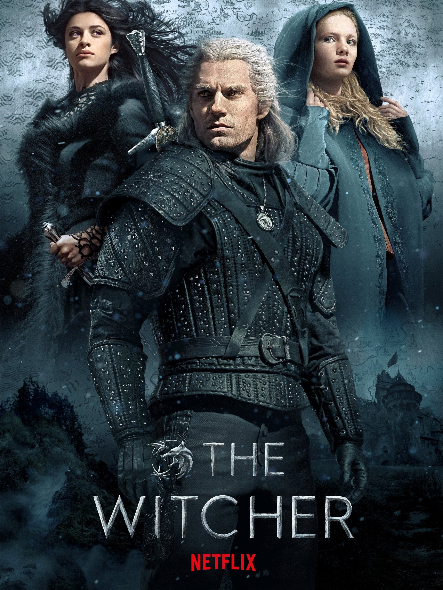

My favorite multimedia series is The Witcher. It started with the books, but I wasn't introduced to it until I played the video game adaptations. Then the most recent media it's in is a TV series. A bunch of fans of the series, myself included, aren't a big fan of the newest season of the TV series since they got rid of Henry Cavill. Out of the three adaptations, I enjoy the video games more, but that's probably due to starting with them.
